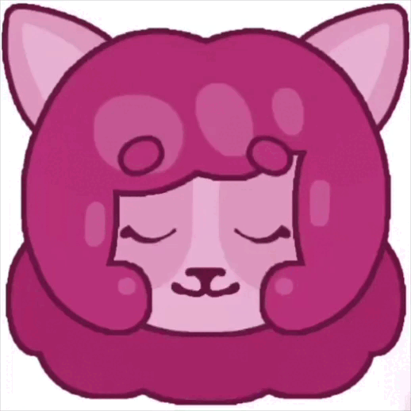

My Blog

Eng
Well, I’ve done it, welcome to my blog! Just like in other typical blogs, I’ll be sharing what’s going on in my life,
showing what I’m currently working on, talking about my thoughts, and things like that.
As you may have noticed, although the home page was designed in english, the blog itself will be in two languages, russian and english, respectively.
Please keep in mind that english is not my native language, so there may be some inaccuracies in the text. :(
This blog may touch upon potentially triggering topics, I will provide advance warning whenever this is the case. Profanity may also be used.
Although the blog might appear quite cute, I am an adult, and the content is intended for an audience aged 16+, read at your own risk.
Happy reading! :3
Rus
Что же, я сделали это, добро пожаловать в мой блог! Как и в других обычных блогах, тут я буду делиться тем,
что происходит у меня в жизни, показывать, над чем я сейчас работаю, говорить о своих мыслях каких-то и всё в таком духе.
Как вы могли заметить, хоть и главная страница сайта была оформлена на английском, сам блог будет на двух языках, русском и английском соответственно.
Напоминаю, что английский не мой родной язык, следовательно в тексте могут быть неточности. :(
В блоге могут затрагиваться триггерные темы, о них я буду предупреждать заранее. Так же может присутствовать нецензурная брать. Хоть мой блог выглядит довольно милым,
однако я являюсь взрослым человеком. Мой блог рассчитан на аудиторию 16+, читайте на свой страх и риск.
Приятного чтения! :3